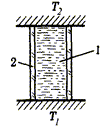
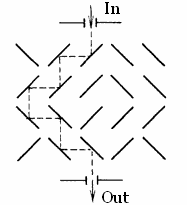

IYPT 1988 Problems
Problems for the 1st IYPT 1988
1. Invent yourself
Suggest original projects of technical and scientific use of high-temperature superconductivity.
2. “Eternal radio”
Develop and construct a portable radio receiver that does not use power supplies. The usability parameter is x=P/Lm, where P is acoustic pressure at a distance of 1 m from the receiver, L is maximum linear dimension, and m is mass of the receiver.
3. Camera obscura
Make a group portrait of your team with a camera obscura. Validate the physical principles of achieving a good quality photograph with such a device.
4. Electric circuit
Several knots (n≤10) are interconnected with batteries of known EMF and r. Create a computer program to calculate the potential difference between the first and the second knot. Consider the time from the start of data input (tables of EMF and r values) to the moment of correct result output, as the quality criterion of the program.
5. Metrology
Determine the maximum precision of length measurement with a steel ruler.
6. Seller of vacuum
An enterprising star farer decided to supply physical laboratories worldwide with vacuum from cosmic space. What are the venture’s chances of being successful?
7. Sunset
The visible Sun disk is flattened at sunset. Measure these distortions experimentally and describe them. Calculate the theoretical ratio of horizontal and vertical dimensions of the Sun disk that is touching the horizon.
8. Color television
You have to construct a four-color television receiver. What colors would you choose as basic? Is it then necessary to modify the image capture equipment?
9. Ninth wave
“Before me are the waves of the sea.
There are so many. They are countless.”
B. Pasternak
Does the “Ninth wave” phenomenon exist? Clarify this question. As a starting point, you can use the ideas from the article “Troika, semyorka, tuz…”.
10. Self-ignition
“Yet also when a many-branched tree,
Beaten by winds, writhes swaying to and fro,
Pressing ’gainst branches of a neighbour tree,
There by the power of mighty rub and rub
Is fire engendered; and at times out-flares
The scorching heat of flame, when boughs do chafe
Against the trunks.”
Lucretius Carus
Thus the Roman philosopher has explained the origin of forest fires. Estimate the probability of such an ignition and its role among the factors that cause fires in nature, i.e. not caused by a human activity.
11. Incandescent lamp
It is said that two 60 W light bulbs shine brighter than three 40 W bulbs. Is it true? Investigate how a small change in supplied voltage will affect light emission and a light bulb’s lifetime.
12. Spring in a city
Spring begins in a city earlier than in the countryside. Describe the main causes of this phenomenon and make numerical estimations. In particular, what would happen if one day all snow from Moscow is removed to the countryside?
13. Heat transfer
Research the heat transfer through the vertical water column in the two cases: T1<T2 and T1>T2.

“1” is water column, “2” is heat insulating tube.
14. Mesoscopics
One of the mesoscopic effects is a significant change of the resistance of a two-dimensional metal sample at low temperatures, if just a single atom within the crystal lattice is displaced. This effect can be visually illustrated if one considers the following model: small flat mirrors, with reflection coefficients equal to 1, are placed in the knots of a two-dimensional lattice n×n, n>>1. Each mirror can exist in two positions only; it can be inclined at 45° clockwise or counter-clockwise.

The states of the mirrors change chaotically, so the laser beam incident on a lattice knot reflects perpendicularly from the knot in both directions with the same probability. Estimate how the output light power will change if one of the knots is replaced by an absolute light-absorbing element.
15. Copper coin
A 1-kopeck coin “fell out” of a space rocket and became an artificial planet. Estimate its lifetime as of a planet of the Solar System.
16. Trapped electrons
Several electrons (2≤n≤30) can freely move inside a circle of a radius R. What relative position of the electrons is stable?
17. Cagliostro’s resistor
Even a human being is a resistor for a school tester. Investigate the laws of parallel and series circuits with a school tester.